In China Employee Termination: Pulse Triage-Ladder Brief for Foreign Employers (2026 Testing Run)
Key takeaways
- A practical way to reduce China termination risk is to use a triage ladder with clear escalation rungs.
- Legal route framing must come first, but cases should climb the ladder when evidence, communication, or settlement signals are weak.
- Foreign employers often keep cases at low review levels too long, then rush high-stakes decisions late.
- Payroll and IIT readiness should be explicit triage criteria, not downstream checks.
- Ladder-based governance improves cross-border alignment and auditability.
Pulse lead: impact-first summary
For many foreign employers, China termination disputes do not begin with one catastrophic error. They begin with small unresolved issues that were never escalated early enough: unclear route rationale, partial records, script inconsistencies, or unsettled payout assumptions. By the time leadership intervenes, options narrow and risk rises.
This run uses a triage-ladder format to solve that problem. Instead of asking “are we ready?” as a binary question, it defines escalation rungs that force timely review as risk complexity increases.
Plain-language legal/regulatory context first
China’s Labor Contract Law sets the legal route boundaries for employer-initiated termination. Implementation regulations and judicial interpretation influence how disputes are evaluated in practice. For foreign operators, the practical takeaway is simple: a route that appears valid in policy language can still fail if evidence quality, communication coherence, and settlement execution are inconsistent.
A triage ladder helps because it links legal context to staged decision rights before execution.
Triage ladder: five escalation rungs
Rung 1: Routine screening (HR)
Use for low-complexity cases with clear route and complete records.
Escalate if: route ambiguity or missing core documentation appears.
Rung 2: Route validation (HR + legal)
Confirm legal anchor, fact pattern fit, and baseline risk grade.
Escalate if: legal basis is arguable but evidence support is weak.
Rung 3: Evidence and communication review (HR + manager + legal)
Test chronology integrity, script alignment, and documentation coherence.
Escalate if: script-document mismatch risk or manager variability is high.
Rung 4: Settlement and execution review (Payroll + finance + HR + legal)
Lock severance/wage/leave/IIT logic, payment timing, and execution controls.
Escalate if: unresolved payout assumptions or timing dependencies remain.
Rung 5: Executive risk decision (Regional leadership + legal)
Approve high-risk or exceptional cases with explicit risk acceptance and fallback path.
Escalate outcome: go / conditional go / no-go with documented reasoning.
Practical implications for foreign employers
- Escalation discipline prevents late-stage surprises.
- Case ownership remains clear while review intensity scales with risk.
- Leadership sees risk progression instead of static snapshots.
- Local city variance can be embedded as rung-specific triggers.
For multinational teams, the ladder also improves HQ-local coordination: instead of debating urgency versus caution at the last minute, both sides can align on which rung the case is on, what evidence is missing, and what conditions are required to move upward or proceed.
Daily operations SOP (role-by-role)
Step A: rung assignment (HR)
Assign initial rung based on route clarity and record completeness.
Step B: legal calibration (HR + legal)
Validate route and set escalation triggers for higher rungs.
Step C: coherence checks (Manager + HR + legal)
Run evidence and communication checks before settlement work finalization.
Step D: settlement lock (Payroll + finance + HR)
Freeze payout and IIT assumptions, capture approval trail.
Step E: final rung decision (Leadership + legal)
Issue go/conditional/no-go with risk note and fallback protocol.
Step F: post-action closure (Legal + HR + payroll)
Within 48 hours, archive full trail and lessons by rung.
Required document checklist
- Rung assignment sheet and route memo
- Legal validation note + risk grade
- Evidence index and coherence review
- Communication package and approval record
- Settlement worksheet + IIT note + version ID
- Escalation log and executive decision note
- Event log and receipt/service records
- Closure archive manifest
Exception handling playbook
Case skips rung review due to urgency
Auto-escalate to next rung with mandatory legal review before action.
Employee refusal or procedural friction
Invoke predefined fallback path and reroute to rung 5 if needed.
Settlement changes after approval
Reopen rung 4, relock model, and reissue final decision.
New facts emerge during execution window
Move case to higher rung immediately; suspend pending actions.
System implementation notes
Add ladder controls in HRIS/payroll workflows:
- Current rung field + escalation reason
- Trigger flags for forced escalation
- Settlement lock status + IIT logic field
- Conditional-go criteria tracker
- Override trail and approver identity
- Closure status by rung
Common mistakes and prevention
Mistake: staying too long at low rung
Prevention: auto-escalation triggers for unresolved blockers.
Mistake: treating settlement as post-rung detail
Prevention: mandatory rung 4 lock before final decision.
Mistake: conditional approvals without criteria
Prevention: explicit conditional-go checklist.
Mistake: no learning loop by rung
Prevention: monthly analysis of failures by rung entry point.
Implementation note for foreign HQ
When introducing the ladder across multiple entities, start with one shared rubric for rungs 1-5, then allow local counsel-approved adjustments in trigger thresholds by city. This keeps governance consistent while respecting local practice variance.
What to do now
- Implement five-rung triage model in active termination workflow.
- Define escalation triggers and ownership per rung.
- Add hard rule: unresolved settlement = no final approval.
- Train managers on rung 3 communication controls.
- Add city-specific triggers to rung logic.
- Pilot on three live cases this week.
- Track rung movement and delay causes.
- Update SOP based on pilot outcomes.
- Report monthly rung-based risk metrics to leadership.
- Recalibrate rung criteria in each hourly quality cycle.
Rung KPI dashboard
Track monthly: average time spent per rung, forced-escalation rate, and post-action exceptions by rung of final decision. These indicators show whether cases are escalating at the right time and whether control quality is improving.
What to watch next
- Continued emphasis on route-evidence coherence.
- Persistent sensitivity around settlement/IIT transparency.
- Ongoing city-level procedural variance.
- Higher value of measurable escalation governance in cross-border teams.
FAQ
Is a triage ladder legally required?
No. It is a governance approach to improve decision quality.
Can low-risk cases remain at lower rungs?
Yes, if escalation triggers do not fire and controls remain complete.
Why include payroll before final approval?
Because payout/tax ambiguities are frequent dispute multipliers.
Are conditional approvals acceptable?
Yes, but only with explicit criteria, owners, and deadlines.
When should external PRC counsel be mandatory?
High-risk unilateral routes, restructuring actions, refusal scenarios, protected-sensitivity cases, and multi-city complexity.
Legal depth appendix (secondary)
This brief is anchored in the PRC Labor Contract Law, State Council implementation regulations, and SPC labor-dispute interpretation guidance. Their combined practical implication remains consistent: route legality, process fairness, and documentary reliability must align through settlement completion.
Disclaimer
This content is informational only and not legal advice. China labor outcomes are fact-specific and locally sensitive. Seek qualified PRC legal advice before action.
Sources
- National People’s Congress. Labor Contract Law of the PRC (English). http://www.npc.gov.cn/zgrdw/englishnpc/Law/2007-12/13/content_1384064.htm (accessed 2026-03-01).
- State Council. Regulations for the Implementation of the Labor Contract Law (Decree No. 535). https://www.gov.cn/gongbao/content/2008/content_1124615.htm (accessed 2026-03-01).
- Supreme People’s Court. Interpretation on labor dispute application issues (Fa Shi [2020] No. 26). https://www.court.gov.cn/fabu/xiangqing/243981.html (accessed 2026-03-01).
- China Briefing (Dezan Shira & Associates). Employee Termination in China (updated 2025-10-17). https://www.china-briefing.com/news/employee-termination-in-china/.
- Littler. Key Recent Developments in China’s Employment Law (2024-03-20). https://www.littler.com/news-analysis/asap/key-recent-developments-chinas-employment-law-china-us-comparative-perspective.
- PwC Worldwide Tax Summaries. People’s Republic of China: Individual Taxes on Personal Income (2025-01-15). https://taxsummaries.pwc.com/peoples-republic-of-china/individual/taxes-on-personal-income.
Need help from China-Payroll.com?
China-Payroll.com supports foreign employers with compliance-first termination operations, integrating legal route governance, payroll settlement certainty, and evidence-ready execution controls.
Need local employment support in China?
If you need a compliance-first partner for hiring, payroll, and risk controls in China, China-Payroll.com can help evaluate the right setup.
Image Prompt Pack
Create a 16:9 hero image for article title: 'In China Employee Termination: Pulse Triage-Ladder Brief for Foreign Employers (2026 Testing Run)'. Scene: global operations team evaluating workforce model options for China market entry. Include motifs: decision m…